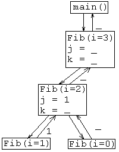

1 2 3 4 5 6 7 8 9 10 11 12 13 14 15 |
cd pwd /home/csc/aardvarka ls private private read_only cd private/ cd csc2110/ cd tutorials/ cd t0/ pwd /home/csc/aardvarka/private/csc2110/tutorials/t0 ls fib3.png makefile t0m.cpp |
| Fig. 1: Command dialog to enter the first tutorial directory. |
This tutorial introduces the programming environment for the ( ), and the common file naming conventions for all the tutorials.
Issuing Commands: the Terminal Window
Begin by launching PuTTY (Windows) or Terminal (Mac). Use one of the following links for instructions on using your connection:
| PuTTY Instructions (Windows) | Terminal Instructions (Mac) |
Using either set of instructions, you should arrive at a window with the RPi prompt displayed as in Line 1 of the window at right. This is the prompt for bash, the Linux command shell program.
The lines shown in the figure represent an initial dialog between you and bash, illustrating the commands: cd, pwd, and ls. Commands you type are highlighted in the figure. The cd comand, all by itself, takes you to your home directory. pwd displays the directory name, and ls lists the contents of a directory.
This tutorial is in the directory, /home/csc//private/csc2110/tutorials/t0. The four commands on lines 6-9 take you to that directory. The pwd command verifies that you are in the right place. The ls command shows you the files in the current directory.
Editing files: the Browser WindowBegin by launching an SFTP client that has an integrated editor. You may use one of thr programs described below, or your own:
| WinSCP Instructions (Windows) | CyberDuck Instructions (Mac) |
Within your SFTP client, navigate to the .../t0 directory. In general, it's a good idea to keep your command prompt and your SFTP client pointed to the same directory. The examples and assignments all use a common pair of files: a main program, always in C++, and a function, usually in assembly. In this case, the main program is t0m.cpp, and the function is in t0.c. Use the editor to examine our first program file:
The main() Program
1 2 3 4 |
// CSC 2110, Computer Organization |
The screen at right shows the first few lines of t0m.cpp. As you read these instructions, use your SFTP client and remote file editor to view your own copy of the file.
This file is a fairly conventional C++ program, and most of it will look familiar to you. Some lines that may need explanation are:
1-7: Every file you submit must include initial comments listing your name, the course, and the assignment number, and a description of the program you are submitting. Failure to include this header may cost you some or all of your assignment grade.
9-12: Depending on your C++ text, you may have used <iostream.h> rather than <iostream>. The latter is recommended by most authors nowadays, but requires the namespace declaration on line 9 if you wish to use cin and cout as global streams. The <ctime> library is for time functions, described below.
14: Extern declarations glue two or more C/++ files into a single program, allowing statements in one file to use data and functions in another. The extern declaration, in this case Fib(), must exactly match prototype for the routine in the other file. Otherwise, the two parts of your program will not link.
19-20, 28-31: To tell how fast our function executes, we are using the clock_gettime() utility. The declaration on lines 19-20 create compatible variables. We call clock_gettime() immediately before and after the call to our test function, to get the most accurate timing possible. Comparison of the time readings in start and finish gives us an elapsed time. The data returned by clock_gettime() could be accurate to the nanosecond, but the actual precision on the is a few microseconds, and can be affected by other programs running on the same machine.
1-41: There is a small bug in this program. Don't fix it just yet; we will use the bug to get used to the edit->compile->test cycle in this environment.
The Function
Open t0.c in another remote editing window. This file is even simpler than the main program, but a few comments may help:
1-5: Every file you submit must include initial comments listing your name, the course, the assignment number, and a description of the program you are submitting.
6: Note that this line should declare exactly the same function name and arguments, in the same order, as line 14 of t0m.cpp.
8-15: The Fib( ) function is an implementation straight out of an elementary programming text. If it doesn't look familiar, look up "fibonacci" in a CS2 textbook. Lines 13-15 are usually written as a single statement; we spread them out here, so we can trace the execution of each function call separately, and examine the results in j and k.
Edit, Compile, Test
[... t0]$ make t0 gcc -g -c t0.c gcc -g -c t0m.cpp t0m.cpp: In function `int main(...)': t0m.cpp:29: implicit declaration of function `int fib(...)' make: *** [t0m.o] Error 1 [... t0]$ make t0 gcc -g -c t0m.cpp c++ -o t0 t0.o t0m.o [... t0]$ ./t0 Fibonacci calculator, F(n) Please enter whole numbers, 'q' to quit. n> 5 Fib(5) = 8 computed in 7e-06 seconds n> 30 Fib(30) = 1346269 computed in 0.1192 seconds n> q [... t0]$ |
To run this program, use your SSH client program. The commands you type are underlined; the rest is produced in response. The command make t0, attempts to compile your program, responding with the error message shown. Switch to the window where you are editing t0m.cpp, correct the error on line 29, and save the file. Switch back to the SSH window, and re-enter the make command; you will know the compilation is successful when the gcc and c++ commands complete without errors.
We now have a program named t0, which we execute by typing ./t0. The program will prompt for a whole number, and print the corresponding element in the Fibonacci sequence. Enter a non-integer to quit.When the program quits, the command interpreter resumes, printing out another [... t0]$ prompt. Run the program again, entering larger values for N. How long does it take to compute the 25th fibonacci number? The 30th? What is the largest fibonacci number you can compute in 10 seconds? If your're curious, you could compile this program on your desktop PC and compare the running times of the two platforms.
[... t0]$ gdb t0 ... Reading symbols from ... t0...done. (gdb) break Fib Breakpoint 1 at ..., line 11. (gdb) break t0.c:16 |
Now that the program works, let's examine its behavior in more detail. The transcript at right leads us through a short debugging session. We begin by typing the command gdb followed by the name of the program we wish to debug. The gdb program prints a copyright notice, followed by the prompt (gdb). It is ready to run the program under our control.
To use a debugger well, we need to decide in advance what we want to watch and when we want to see it. Otherwise, we will be overwhelmed by thousands of instructions, most of them doing things best taken for granted. The first break instruction targets the first executable line of the Fib() function; the second sets the breakpoint at line 16 of t0.c.
We type r or run to run the program. It runs just as before, prompting us for n>. Here we type in 3 and press return. The program resumes until it reaches our first breakpoint; then it stops and gdb prints the current argument and the statement about to be executed. The step statement advances the program to the next executable line; in this case that line is 13. Pressing the return key repeats the step instruction; but before the program reaches line 14 of the current function it must descend recursively into Fib(i=2). During that descent, it stops again at Breakpoint 1.
Stepping through even a short program like this quickly becomes tedious. The continue command causes the program to proceed without stopping, until it reaches a breakpoint, input pause, or exit point. In this program, the first breakpoint causes a stop each time we recursively enter Fib(). If we keeping pressing return, we will sped rapidly through these invocations, until we finally reach the second breakpoint in the call to Fib(i=2).
Another very useful feature of gdb is its info command. In our example, info locals prints out the values of j and k. More info options are documented in the Debugging with gdb
Repeating the continue command eventually takes us past the last breakpoint, to the point where the program prints out its answer and prompts us for the next value. If we entered another number, we would descend into another set of recursive invocations, hitting our breakpoints as we go. By entering a non-number q we exit the program. We could also run the program again by typing run in response to the gdb prompt, but likewise we type quit to return to the bash prompt.
Self Tests
Since you are not allowed to use the machines at test time, you should try these exercises with pencil, paper, and calculator. You can then use the machine to check your answers and grade yourself.
Assignment
You will be assigned one of the following functions in class; and you are encouraged to do as many others as you need. Write a RECURSIVE solution to your function, even if a nonrecursive solution seems easier. You will need the recursive code in a later tutorial. Submit t0sx.c, t0sxm.cpp, and t0sx.log.
To begin, note the letter x of your assigned problem, and use the following commands to create the files you need:
cp t0.c t0sx.c cp t0m.cpp t0sxm.cpp
Use your remote editor to rewrite t0sx.c with the proper comments and definition for the function x above. Then, rewrite t0sxm.cpp, revising the comments, supplying the function prototype, prompting for the arguments, and calling the function. Compile, run and (if necssary) debug your program with the commands:
make t0sx ./t0sx gdb t0sx
When you have run and tested your program and found it to work correctly, email t0sx.c and t0sxm.cpp to:
To: william.hooper@belmont.edu Subject: t0sx
A quick introduction to strings
In C (and C++), a string is simply a pointer to consecutive bytes in memory, ending in zero. For example, the statement:
char* s = "Hello";
creates a pointer s to six bytes of memory: 0x48, 0x65, 0x6c, 0x6c, 0x6f, 0x00. The 'null' character, 0x00, marks the end of the string. Notice that different pointers can use the same characters to list overlapping strings. For example:
char* t = s + 1;
causes t to represent the string "ello", and:
t[3] = 'p';
changes t to "ellp" and s to "Hellp". Plenty of references to C strings exist; the Wikipedia entry is not a bad place to start, although you can ignore the wide string information for these tutorials.
Still Curious?
From this brief tutorial, you may know what to type, but not why you are typing it. An expanded discussion of each command used in the tutorial is in bash.html. Further guidance is accumulating in faq.html. Your email, phone and face-to-face questions are also welcome!